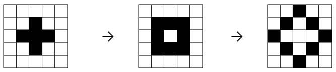
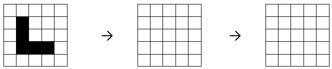
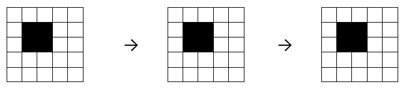
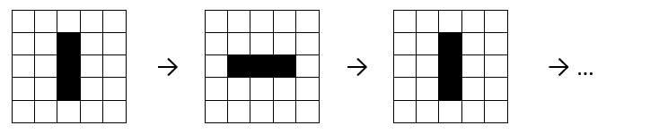
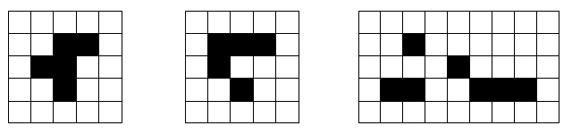

Conway’s Game of Life#
In this session we will be using ‘Google Colab’, an online platform for running Python code. Before you start, check that you can access it using the following link. You will need to create a Google login if you don’t already have one.
https://colab.research.google.com/drive/1_hZu3UT2c6z7nj6EiDD-kFCUIX_784Us
The Rules of the Game#
Start with a square grid of “cells”, each of which is “alive” (black) or “dead” (white).
At each step, we count the number of each cell’s 8 immediate neighbours that are alive, and
any live cell with fewer than 2 live neighbours dies
any live cell with more than 3 live neighbours dies
any live cell with 2 or 3 live neighbours lives on
any dead cell with exactly three live neighbours becomes alive, and otherwise stays dead
Example#

Check that you understand how to apply the rules to the first pattern to reach the second and third patterns.
Question 1
Fill in the patterns in the grids below.

Game of Life in Python#
As you may have found, it is difficult to simulate the Game of Life using pen and paper. Fortunately, it is easily simulated on a computer. The link at the start of this document will take you a Game of Life simulator programmed in Python on the Google Colab platform. The numbers in the square brackets near the top of the code correspond to the starting pattern for the simulation (1 = black, 0 = white):
x_init = [[0, 0, 0, 0, 0],
[1, 0, 1, 1, 1],
[0, 0, 0, 1, 1],
[1, 1, 1, 1, 1],
[0, 0, 0, 0, 0]]
Question 2
Follow the above link and run the simulation. By changing the numbers in the square brackets, check your answers to Question 1.
Still Life#
A “still life” is a pattern which doesn’t change from step to step.

Question 3
How many other still life patterns can you find?
Oscillator#
An “oscillator” is a pattern which repeats after a fixed number of steps.

Question 4
Can you find any other oscillator patterns?
Life#
Why is it called “Game of Life”? Because there are some very simple starting patterns which lead to complicated behaviour reminiscent of living organisms.

Question 5
Which of the above starting patterns result in ‘life’ ?
Which of the above patterns is a ‘glider’ ?
Tip: You can make the game board bigger by increasing the value of
d
x_init = [[0, 0, 0, 0, 0],
[1, 0, 1, 1, 1],
[0, 0, 0, 1, 1],
[1, 1, 1, 1, 1],
[0, 0, 0, 0, 0]]
d = 30
Experiment#
Question 6
Experiment with different starting patterns.
Can you make a pattern that grows forever?
What happens if you create several gliders pointing towards each other?
What other interesting effects can you create…? Compare you answers with your colleagues!
Tip: Increase the speed of the game by decreasing the value of
interval(near the bottom of the notebook):
anim = animation.FuncAnimation(fig, updatefig, frames=N,
interval=1000, blit=True)
Taking it Further#
Interesting Links#
Some more Patterns To Try#
diehard = [[0, 0, 0, 0, 0, 0, 1, 0],
[1, 1, 0, 0, 0, 0, 0, 0],
[0, 1, 0, 0, 0, 1, 1, 1]]
boat = [[1, 1, 0],
[1, 0, 1],
[0, 1, 0]]
r_pentomino = [[0, 1, 1],
[1, 1, 0],
[0, 1, 0]]
beacon = [[0, 0, 1, 1],
[0, 0, 1, 1],
[1, 1, 0, 0],
[1, 1, 0, 0]]
acorn = [[0, 1, 0, 0, 0, 0, 0],
[0, 0, 0, 1, 0, 0, 0],
[1, 1, 0, 0, 1, 1, 1]]
spaceship = [[0, 0, 1, 1, 0],
[1, 1, 0, 1, 1],
[1, 1, 1, 1, 0],
[0, 1, 1, 0, 0]]
block_switch_engine = [[0, 0, 0, 0, 0, 0, 1, 0],
[0, 0, 0, 0, 1, 0, 1, 1],
[0, 0, 0, 0, 1, 0, 1, 0],
[0, 0, 0, 0, 1, 0, 0, 0],
[0, 0, 1, 0, 0, 0, 0, 0],
[1, 0, 1, 0, 0, 0, 0, 0]]